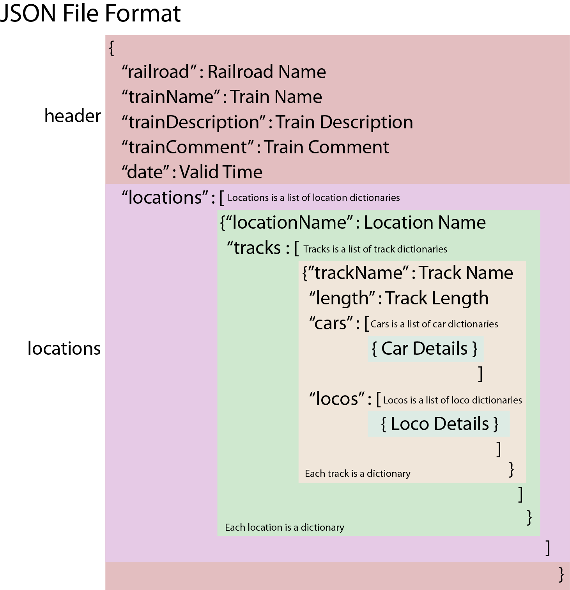

Help File - Pattern Scripts plugin for JMRI
Videos:
Organization:
The following chart shows the code structure of this plugin.
Key – PatternConfig.JSON:
Each JMRI profile gets its own configuration file, found in the operations folder.
The description of each element is in color.
User editable keys are described in blue
If a mistake is made editing the PatternConfig.json file, the plugin will replace it with the default file, and the user will have to start over.
{
"CP":
{ Control Panel
"PH":
140, Panel Height
"PW":
2000, Panel Width
"RV":
20220109, Version Control for this Plugin
"SI": { Script Includes, Choose
which subroutines to activate
"FutureSubroutines":
false,
"TrackPattern": true
}
},
"LI": { Logging Index, associate a
number with a log level
"1": "- DEBUG
-",
"3": "- INFO -",
"5":
"- WARNING -",
"7": "- ERROR -",
"9": "- CRITICAL -"
},
"LM":
{ Location Matrix
"LO":
{ Location Options
"0":
[
"Pattern Scripts plugin is turned off",
null
],
"1": [
"Display
the Control Panel on the PanelPro frame",
"panelPro"
],
"2": [
"Control Panel
added to its own window",
"panelProButton"
]
},
"PL": "2" Pattern
Location, which option is chosen
},
"TP":
{ Track Pattern settings
"AL":
[ All Locations for the active profile
"City",
"Crest",
"Downtown",
"Easton",
"Junction",
"Midway",
"Northton",
"Out of Service",
"Overton",
"Park",
"Train
Service",
"Valley",
"Weston"
],
"AS": true,
"DS": "*No
Waybill", Destination Stand In for print
reports
"DT": "*No Waybill",
Destination Track Stand In for print reports
"FD": "*Via Staging", Final
Destination Stand In for print reports
"FT":
"*Via Staging", Final Destination
Track Stand In for print reports
"PA": false,
Yard Tracks Only
"PH":
16, Panel Height for lines of set cars form
"PI": false, Ignore Track Length
"PL": "City", Pattern
Location
"PT": { Pattern
Tracks, all tracks for location
"701":
true,
"702": true,
"703":
false,
"704": false,
"705":
false,
"706": false,
"A1":
false,
"Ice1": false,
"OE":
false,
"ON": false,
"\u00c7oach 1":
false
},
"PW": 260, Panel
Width
"RM": 8, Row
Multiplier
"RT": { Default
Report Titles
"PR": "Track Pattern
Report", Default title for the pattern
report
"SC": "Switch List for track",
Default title for the set cars report
"TP": "TrainPlayer Work Events" Default
title for the TrainPlayer report
},
"RW":
{ Report width, print column width for each
attribute, The width number is editable
" ":
0, Catches empty box added to Local Move
Message Format
"Color": 6,
"Comment": 15,
"Dest&Track": 30,
"Destination": 15,
"FD&Track":
21,
"Final Dest": 11,
"Hazardous":
10,
"Input": 6,
"Kernel": 7,
"Kernel Size": 12,
"Length": 7,
"Load": 6,
"Load Type": 10,
"Location": 9,
"Loco Type": 18,
"Model": 5,
"Number": 7,
"Owner": 6,
"PickUp Msg": 12,
"RWE": 10,
"Road": 5,
"SetOut
Msg": 12,
"Track": 6,
"Type":
6,
"Weight": 7
},
"SC": [
Sort Cars key and sort order, choose from RW
keys
"Load Type",
"FD&Track"
],
"SL": [ Sort Locos key
and sort order
"Model"
],
"TI": false include TrainPlayer
subroutines
}
}
Track Pattern and Switch List JSON format
The pattern reports and TrainPlayer exports all start with the creation of a JSON file. The file is created by this plugin and in the case of TrainPlayer manifest exports the JSON is created by modifying the JMRI generated manifest JSON. All the JSON files are written to the jsonManifests folder. They follow the illustrated format:

Pattern Scripts window:
Layout of methods and variables for:
TrackPattern.ViewEntities.TrackPatternPanel().makePatternControls()

Pattern Report for Track window:
Layout of methods and variables for:
TrackPattern.ViewSetCarsForm.patternReportForTrackWindow(self.trackPattern,offSet)

This document © 2021 Greg Ritacco, all rights reserved.